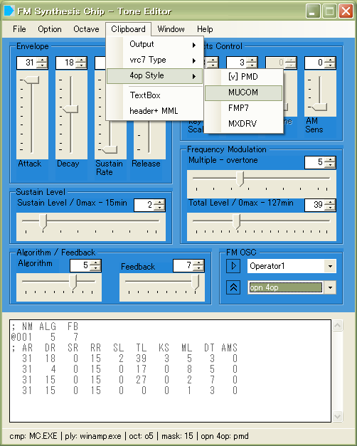
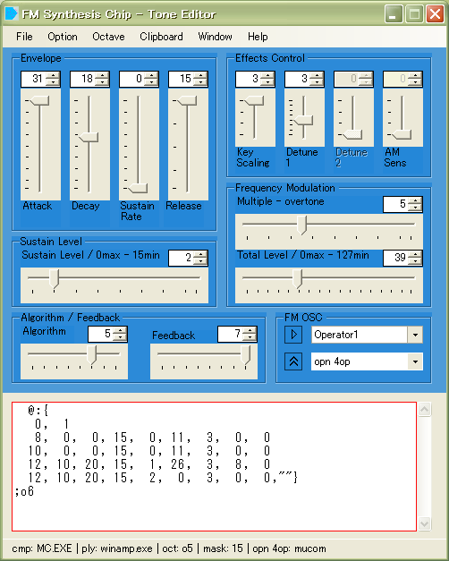
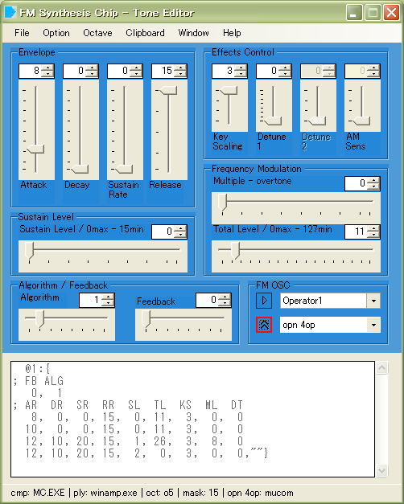
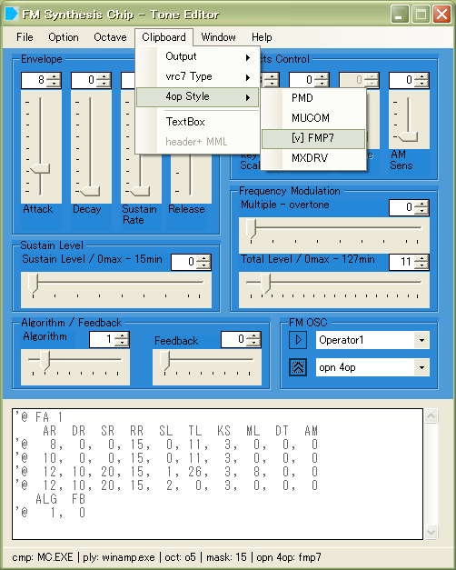

|  |
fm_editor.exeを起動し、 "4op Style - MUCOM"を選択します。 |
|  |
本体パネル、"Text Box"へ MUCOM音色形式を流し込みます。 |
|  |
"Importボタン"を押すと、
内部へ読み込みます。
|
|  |
mucom形式をFMP7形式にするには、 "4op Style - FMP7"へ変更して、 出力変換します。 |
|
home>
index>
Tone Import,Export - FM Tone Editor |
2021 04coreworks
|